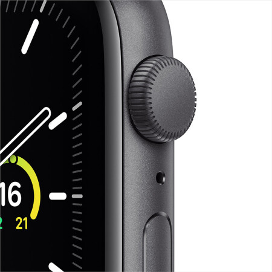
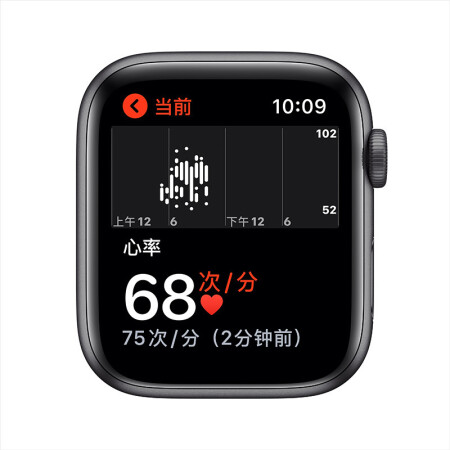
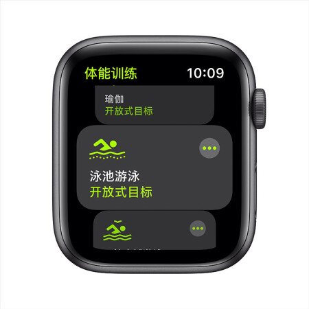
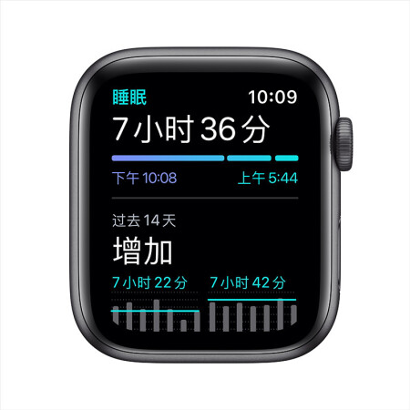
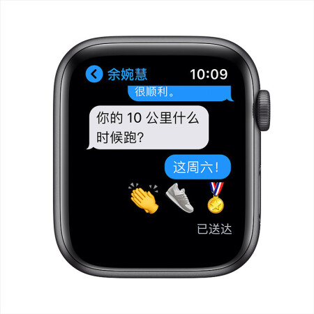

用户名：
js获取
jq获取
增加input
tab1
tab2
tab3
tab1-con
tab2-con
tab3-con
返回
顶部
练习
你的爱好运动？
全选/全不选
足球
蓝球
羽毛球
乒乓球
jQuery操作表格
Name
Email
Salary
Tom
tom@163.com
5000
删除
Jerry
Jerry@163.com
8000
删除
Bob
Bob@163.com
25000
删除
添加新员工
name:
email:
salary:
改变点击的li背景色
AAAA
BBBBB
CCCCCC
DDDDDDD
添加li
轮播图
 
1
2
3
4
5
<
>
效果
fadeIn/fadeOut/fadeToggle
slideUp/slideDown/slideToggle
show/hide/toggle
自定义动画
animate
animate指定移动的位置
animate指定移动的距离
stop
导航菜单
首页
关于我们
公司简介
发展历程
大事记
新闻中心
公司新闻
最新消息
人事变动
jQuery插件
通过自定义的jQuery插件实现全选/全不选/反选
足球
蓝球
羽毛球
乒乓球
图片前后移动/大图切换/放大镜
<
>